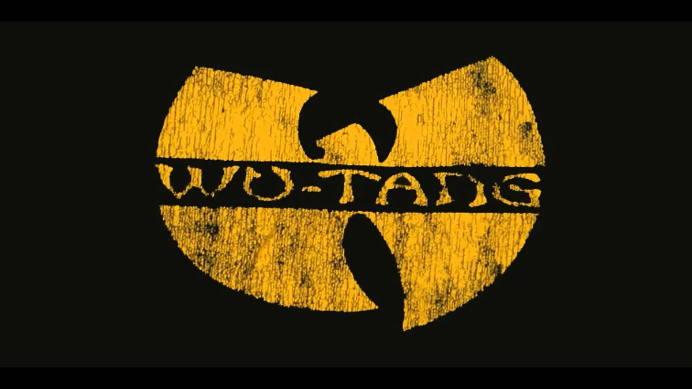
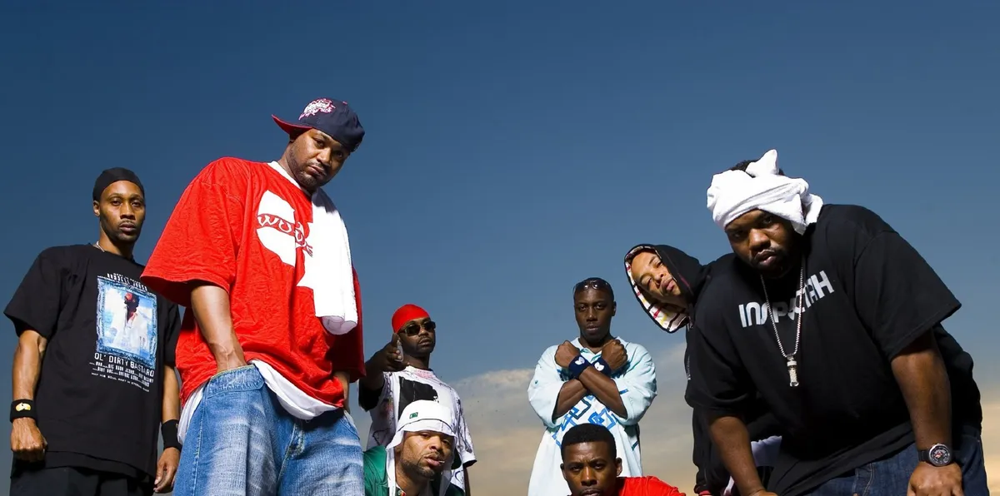

Wu-Tang Clan es un grupo de hip-hop originario de Staten Island, Nueva York, formado en 1992. El grupo está compuesto por nueve miembros principales: RZA, GZA, Method Man, Raekwon, Ghostface Killah, Inspectah Deck, U-God, Masta Killa y Ol' Dirty Bastard (fallecido en 2004).
El grupo alcanzó la fama con su álbum debut, "Enter the Wu-Tang (36 Chambers)", lanzado en 1993. El álbum fue aclamado por la crítica y es considerado como uno de los mejores álbumes de hip-hop de todos los tiempos. Wu-Tang Clan es conocido por su estilo único de rap, que combina letras crudas y desafiantes con beats pesados y sampleos de música soul y kung-fu.
Después del éxito de "Enter the Wu-Tang", el grupo lanzó varios álbumes en solitario y colaboraciones con otros artistas. Wu-Tang Clan también se convirtió en una marca, con productos de merchandising y una línea de ropa.
A lo largo de los años, Wu-Tang Clan ha experimentado altibajos y ha pasado por varias reencarnaciones,
pero el grupo sigue siendo una influencia importante en el hip-hop y la cultura popular en general.
En 2021, el grupo lanzó un álbum de estudio llamado "Wu-Tang: The Saga Continues".

RZA es uno de los miembros fundadores y líder del grupo. Además de su papel como rapero, también es el principal productor musical del grupo, y ha creado gran parte de la música de Wu-Tang Clan. También ha sido el encargado de producir varios álbumes en solitario de otros miembros del grupo, así como proyectos en colaboración con otros artistas fuera de Wu-Tang.
Last updated 3 mins ago

GZA ha sido un miembro respetado y admirado dentro de Wu-Tang Clan, y ha trabajado en colaboraciones con otros miembros del grupo y con artistas fuera del colectivo. Como resultado, ha sido una figura influyente en la cultura del hip-hop y ha sido reconocido como uno de los MCs más talentosos y astutos de la música de hip-hop.
Last updated 3 mins ago

Dentro de Wu-Tang Clan, ODB era conocido por ser uno de los MCs más distintivos del grupo, y aportaba un enfoque único a sus letras y actuaciones en vivo. También colaboró con otros miembros del grupo en varios proyectos, y lanzó varios álbumes en solitario, incluyendo el exitoso "Return to the 36 Chambers: The Dirty Version".
Last updated 3 mins ago
![Card image cap]()
Dentro de Wu-Tang Clan, Method Man fue uno de los miembros más destacados y se convirtió en una figura popular en la cultura del hip-hop a través de sus colaboraciones en proyectos del grupo y en sus propios álbumes en solitario. También trabajó en colaboraciones con otros artistas, como Mary J. Blige y Redman.
Last updated 3 mins ago

Wu-Tang Clan, Raekwon ha sido uno de los miembros más destacados, y ha colaborado con otros miembros del grupo en varios proyectos, así como en su propia carrera en solitario. En 1995, lanzó su álbum debut en solitario, "Only Built 4 Cuban Linx...", que se convirtió en un clásico instantáneo del hip-hop y es ampliamente considerado como uno de los mejores álbumes de la historia del género.
Last updated 3 mins ago

Ghostface Killah es un rapero y miembro fundador del grupo de hip hop Wu-Tang Clan. Es conocido por su estilo de rap agudo y su enfoque en la narración de historias en sus letras. Ghostface Killah ha lanzado varios álbumes en solitario y ha colaborado con muchos otros artistas en la industria de la música. Junto con los otros miembros de Wu-Tang Clan, ha sido muy influyente en el mundo del hip hop y ha dejado una huella duradera en la cultura musical.
Last updated 3 mins ago

U-God era conocido por su estilo de rap lírico y su voz distintiva. Contribuyó a muchos proyectos del grupo,
y también lanzó varios álbumes en solitario a lo largo de los años, incluyendo "Golden Arms Redemption" y "The Keynote Speaker".
U-God ha sido conocido por su presencia en los medios y su compromiso con la comunidad. Ha aparecido en varios programas de televisión y películas,
y ha trabajado en proyectos benéficos para la juventud y la comunidad en general.
Last updated 3 mins ago

Inspectah Deck es un rapero y miembro fundador del grupo de hip hop Wu-Tang Clan. Es conocido por su fluidez en el rap y su habilidad para construir letras complejas y llenas de metáforas. Además de ser miembro de Wu-Tang Clan, Inspectah Deck también ha lanzado varios álbumes en solitario y ha colaborado con muchos otros artistas en la industria de la música.
Last updated 3 mins ago

Masta Killa es conocido por su estilo de rap lírico y su voz suave y calmada. A lo largo de los años, Masta Killa ha sido reconocido como uno de los miembros menos conocidos de Wu-Tang Clan, pero sigue siendo valorado por su contribución al sonido distintivo del grupo. Ha colaborado con muchos otros artistas y ha seguido lanzando música tanto en solitario como en colaboración con otros artistas.
Last updated 3 mins ago
Last updated 3 mins ago
Last updated 3 mins ago
Last updated 3 mins ago
Last updated 3 mins ago
Last updated 3 mins ago
Last updated 3 mins ago